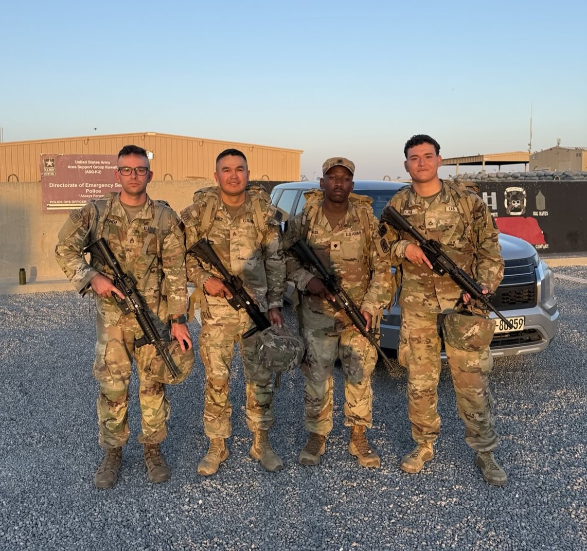
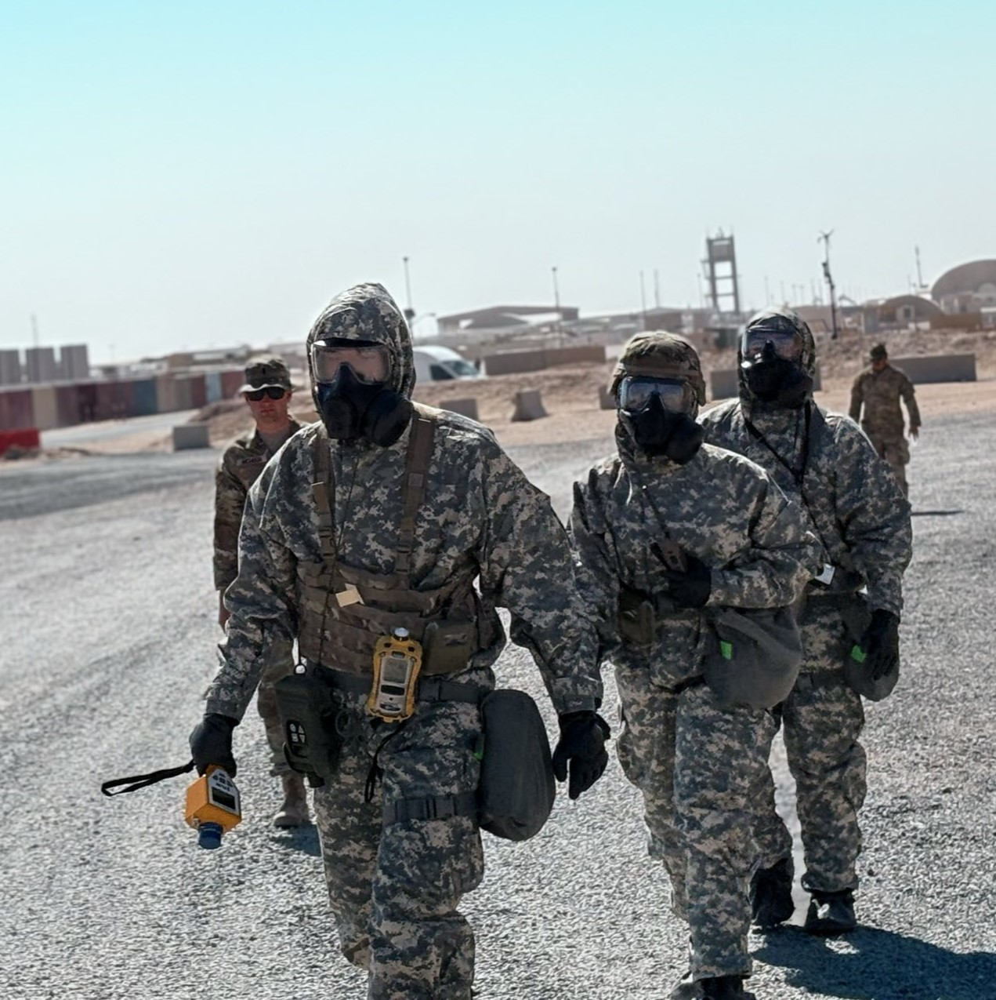

Projects & Experience
Selected experiences highlighting my technical training,
military service, teamwork, and professional development.
PROJECT 1
Middle East Deployment — Kuwait
411th Chemical Company | Operation Spartan Shield |
CBRN Specialist


Served as a Chemical, Biological, Radiological, and Nuclear (CBRN) Specialist
with the 411th Chemical Company while deployed to Kuwait in
support of Operation Spartan Shield. Supported seven Emergency
Deployment Readiness Exercises and a capabilities demonstration for
military leadership, contributing to the unit's operational readiness
and mission success. I also participated in joint training with Explosive
Ordnance Disposal (EOD) personnel and qualified for Air Assault School tryouts,
strengthening my technical proficiency, teamwork, adaptability, and ability to
perform in demanding environments.
KEY SKILLS
CBRN Operations
Operational Readiness
Teamwork
Adaptability
Attention to Detail
Emergency Response
PROJECT 2
CBRN Specialist School Graduation
U.S. Army | Chemical, Biological, Radiological & Nuclear Training
Successfully completed U.S. Army CBRN Specialist training,
gaining specialized knowledge in chemical, biological, radiological,
and nuclear defense operations. The training included hazardous-material
response, detection and identification procedures, decontamination,
protective equipment, and emergency preparedness. Completing this
specialized training strengthened my technical knowledge, attention
to detail, problem-solving abilities, and ability to respond
effectively to hazardous situations.
KEY SKILLS
CBRN Operations
Hazardous Materials Response
Detection & Decontamination
Emergency Preparedness
Protective Equipment
Attention to Detail
Teamwork
PROJECT 3
Military Awards & Recognition
U.S. Army | Achievement & Professional Recognition
Earned military awards and recognition for outstanding performance,
dedication, and contributions to mission success throughout
my U.S. Army service. These achievements recognize my commitment to
completing responsibilities to a high professional standard while
supporting my team in challenging and fast-paced environments.
They also represent the leadership, accountability, discipline,
adaptability, and attention to detail I have developed throughout
my military career.
View Award Documentation
KEY SKILLS
Leadership
Professionalism
Teamwork
Accountability
Mission Focus
Adaptability
Attention to Detail